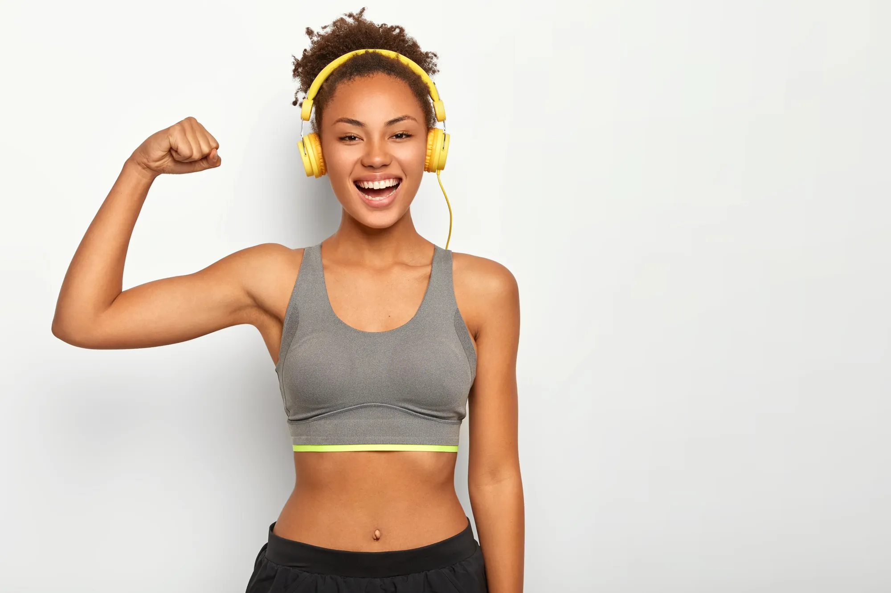
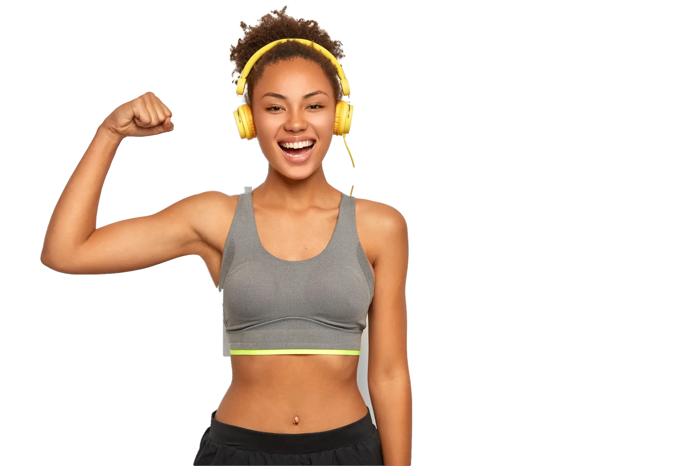
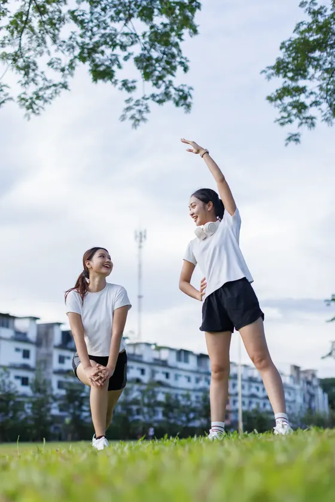
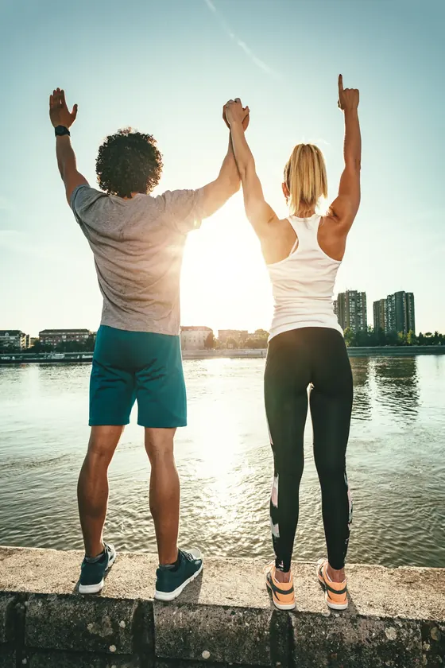
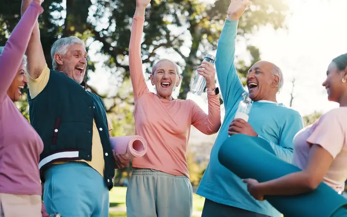

Medicina do esporte · Lagoa, Rio de Janeiro
Fôlego para treinar a vida inteira.
Check-up do atleta, cardiologia do esporte e tratamento de lesões para quem corre, pedala, nada ou levanta peso.
Check-up do atleta, cardiologia do esporte e tratamento de lesões. Do amador ao federado.
- Check-up do atleta com ergoespirometria
- Retorno ao esporte com plano por fases
- Do amador ao federado
-
01
a partir de 35 anos ou com histórico na família Marcar →
Cardiologia do esporte
Eletrocardiograma, ecocardiograma e teste ergométrico antes de começar ou aumentar a carga.
-
02
ultrassom no consultório Marcar →
Lesões e volta ao treino
Canelite, fascite, tendinite de Aquiles, entorse. Diagnóstico com ultrassom na hora e plano de retorno por semana.
-
03
laudo com zonas em 48 h Marcar →
Ergoespirometria e performance
Teste em esteira com análise de gases para achar os seus limiares reais e montar as zonas de treino.
-
04
avaliação de força e equilíbrio Marcar →
Longevidade ativa
Força, equilíbrio e massa óssea depois dos 60, com prescrição de exercício como se fosse remédio.
Para quem treina
Cada esporte cobra o corpo de um jeito.
Corrida
Da primeira prova de 5 km à maratona: pisada, volume semanal e prevenção de canelite.
Marcar consulta

Prova marcada
Planejamento de 12 semanas até o dia da largada, com check-up antes e depois.
Marcar consultaCheck-up do atleta
Uma manhã de exames. Um laudo que o seu treinador entende.
- Consulta clínica
- histórico de treino, lesões e sono
- ECG e ecocardiograma
- coração em repouso
- Teste de esforço
- esteira com monitoramento
- Bioimpedância
- massa magra, gordura e água
Zonas de treino
Descubra em que batimento cada treino acontece.
Estimativa pela fórmula de Karvonen. No consultório, a ergoespirometria mede os seus limiares de verdade.

Zona 2 · base aeróbica
131–143bpm
Ritmo em que dá para conversar em frases curtas. É onde se constrói fôlego: a maior parte da semana deveria acontecer aqui.
Medir minhas zonas reaisNinguém treina sozinho.
Nem quem cuida de quem treina.
Médico, fisioterapeuta e nutricionista discutem o seu caso na mesma semana.
Equipe
Médicos que também acordam cedo para treinar.
CRM-RJ 52.81447-3 · RQE 30912
Dr. André Cerqueira
Medicina do esporte. Corre maratonas desde 2012 e cuida de corredores de rua e triatletas.
- Lesões por sobrecarga
- Ultrassom musculoesquelético
CRM-RJ 52.90318-6 · RQE 41207
Dra. Júlia Vasconcelos
Cardiologia do esporte. Faz ergoespirometria e acompanha atletas acima dos 40 e quem voltou a treinar.
- Ergoespirometria
- Arritmias no exercício
Contato
Marque a sua consulta.
Av. Epitácio Pessoa, 3.120, sala 704 · Lagoa, Rio de Janeiro (RJ)
Segunda a sexta, 6h às 20h · Sábado, 7h às 12h
(21) 3215-0155 · agenda@passadaesporte.com.br
Marcar pelo WhatsApp